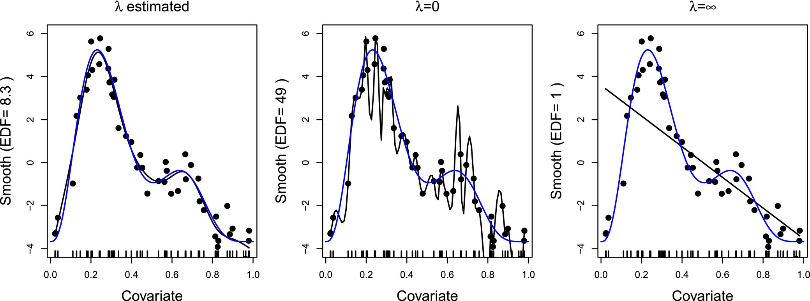
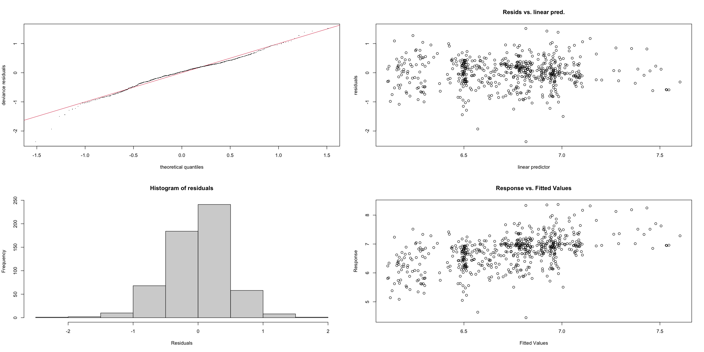

Generalized Additive Models
Misc
- {mgcv} - Mixed GAM Computation Vehicle with Automatic Smoothness Estimation
- See R >> Documents >> Regression >> GAMs >> Generalized Additive Models: An Introduction with R, Second Edition
bam: Uses numerical methods are designed for datasets containing upwards of several tens of thousands of data- Has a much lower memory footprint than
gam - Can compute on a cluster set up by {parallel}
- If discrete=TRUE
- Uses a method based on discretization of covariate values and C code level parallelization (controlled by the nthreads argument instead of the cluster argument) is used
- Number of response data can not exceed
.Machine$integer.max
- Has a much lower memory footprint than
- {mgcvUtils} - Various mgcv-related GAM utilities
- {gamlss} - GAM modeling where all the parameters of the assumed distribution for the response can be modelled as functions of the explanatory variables
- {gamboostLSS} - Boosting models for fitting generalized additive models for location, shape and scale (‘GAMLSS’) to potentially high dimensional data.
- {bamlss} - Bayesian Additive Models for Location, Scale, and Shape (and Beyond) (GAMLSS)
- {GeDS} - Geometrically Designed Spline Regression
- Alternative to a traditional GAM which estimates the smoothing parameter while keeping the number of knots and locations fixed
- Efficiently estimates the number of knots and their positions, as well as the spline order
- Models: GAMs, Component-wise Gradient Boosting, Functional Gradient Boosting (FGB)
- Distributions: Any distribution from the Exponential family
- {splineplot} - Provides a unified interface for visualizing spline effects from GAM (Generalized Additive Models) and GLM (Generalized Linear Models) in R.
- It creates publication-ready plots with confidence intervals, supporting various model types including Linear, Logistic, Poisson, and Cox proportional hazards models.
- Also see
- Feature Engineering, Splines
- Mixed Effects, GLMM >> Examples >> Example 1, 2
- Resources
- Video “Introduction to Generalized Additive Models with R and mgcv” Gavin Simpson
- Video “The Wonderful World of mgcv” Noam Ross
- Hierarchical generalized additive models in ecology: an introduction with mgcv (2019)
- Yes! You can do that in mgcv
- Papers
- Bayesian views of generalized additive modelling
- Bayesian GAMs explainer
- Soil texture prediction with Bayesian generalized additive models for spatial compositional data
- Uses {brms} to fit a Bayesian GAM to model a compositional response. Model includes variables for elevation, slope, longitude, latitude
- Adding structure to generalized additive models, with applications in ecology
- Describes how to fit varying-coefficient, scalar-on-function and distributed lag models in an ecological context.
- Modelling phenology using ordered categorical generalized additive models
- Uses {mgcv} for modeling and {sure} diagnostics to model an ordinal response
- Method: Using generalized additive models in the livestock animal sciences by Simpson (Repo)
- Shows how learning from data can produce a better fit to data than that of parametric models
- Shows how hierarchical GAMs can be used to estimate growth data from multiple animals in a single model
- Shows how hierarchical GAMs can be used for formal statistical inference in a designed experiment
- Bayesian views of generalized additive modelling
- Large gaps in the values of the predictor variable can be a problem if you are trying to interpolate between those gaps. (See bkmks,
method = "reml" + s(x, m = 1)) - Thread discussing an example using basis type, bs = “sz”, which is meant for separating a baseline from other effects
- Partial Effect Plots - Show the component contributions, on the link scale, of each model term to the linear predictor.
- {gratia::draw}
- Sound similar to Partial Dependence Plots/Profiles except instead of the average response value on the Y-axis, it’s the effect size.
- The Y-axis on these plots is typically centred around 0 due to most smooths having a sum-to-zero identifiability constraint applied to them
- Show link-scale predictions of the response for each smooth, conditional upon all other terms in the model, including any parametric effects (i.e. fixed effects) and the intercept, having zero contribution.
- These plots show adjusted predictions, just where the adjustment includes setting the contribution of all other model terms to the predicted value to zero
- Univariate Smooth Derivatives - (Partial Effect Alternative) The change in \(Y(n)\) for a small change in \(X\), which is comparable with usual interpretations of model \(\beta\)
mgcv::plot.gamwith deriv = TRUE plots derivatives ofsinstead of the usual partial effect plots
Description
Misc
- Notes from Bayesian Views of Generalized Additive Modelling (See Papers)
- Effective Degrees of Freedom (EDF): The degrees of freedom actually used by the model, once the penalty is taken into account
- Usually defined as the sum of the diagonal elements of the hat matrix
Model
\[g(\mu_i) = \boldsymbol{\alpha_i^T \theta} + s_1(x_{1i}) + s_2(x_{2i}) + s_3(x_{3i}, x_{4i})\]
- \(\mu_i = \mathbb{E}(Y_i)\)
- \(Y_i \sim EF(\mu_i, \phi)\)
- \(Y_i(i = 1, \ldots, n)\) is the response
- \(EF(\mu_i, \phi)\) indicates an exponential family distribution with mean \(\mu_i\) and scale parameter \(\phi\).
- \(\boldsymbol \alpha_i^T\) is a vector of slopes and intercept covariates, where \(\theta\) are their associated coefficients.
- \(s_j\) are smooth functions of one or more covariates \(x_{1i}\), \(x_{2i}\), \(x_{3i}\), \(x_{4i}\), ….
Splines (aka Smooths)
\[s(x) = \sum_{k=1}^K \beta_k b_k (x)\]
- Concept: A complicated function can be formed by summing smaller, less complicated basis functions.
- \(\beta_k\) are coefficients to be estimated
- \(b_k\) are fixed basis functions (with maximum complexity or basis dimension \(K\))
- To avoid overfitting (too large of a \(K\)), this term gets penalized according to its wiggliness.
Penalty
\[\sum_{m=1}^M \boldsymbol{\lambda_m \beta^T S_m \beta}\]
- \(\lambda_m\) are estimated smoothing parameters that control the influence of the penalty
- \(\beta\) is a vector of coefficients
- \(S_m\) is a matrix of the fixed parts of the penalty
- These are integrated (sometimes summed) squared derivatives (“changes in”) \(b_k s\)
- Note that multiple \(\lambda\) can correspond to a single smooth or multiple smooths may share a single \(\lambda\), so \(M\) is not necessarily the number of unique \(\lambda\) in the model.
- Example

- A thin-plate regression spline was fitted to the data with differing smoothing parameters (\(\lambda\))
- The blue line is the function used to generate the points (with noise added)
- The black line is the fit with differing \(\lambda\) values
- Estimated \(\lambda\) has an EDF of 8.3
- \(\lambda = 0\) (i.e. no penalty) has a maximum EDF, EDF = 49
- \(\lambda = \infty\) (numerically) leading to a linear fit and an EDF of 1.
.resources/desc-pen-1.jpg){kind=link}
Diagnostics
-
- QQ plot of deviance residuals,
- Scatterplot of deviance residuals against the linear predictor,
- Histogram of deviance residuals, and
- Scatterplot of observed vs fitted values.
{gratia::draw(mod, residuals = TRUE)} - Adds partial residuals to partial effects plots
- Can help diagnose overfitting in your spline terms
“Deviance explained” is the R2 value for GAMs
mgcv::gam.check(gam_fit)
## Method: GCV Optimizer: magic ## Smoothing parameter selection converged after 19 iterations. ## The RMS GCV score gradient at convergence was 5.938335e-08 . ## The Hessian was positive definite. ## Model rank = 21 / 22 ## Basis dimension (k) checking results. Low p-value (k-index<1) may ## indicate that k is too low, especially if edf is close to k'. ## k' edf k-index p-value ## s(id) 1.00 0.35 0.82 <2e-16 *** ## s(log_profit_rug_business_b) 9.00 8.52 1.01 0.69 ## s(log_profit_rug_business_b):treatment 10.00 1.50 1.01 0.62 ## --- ## Signif. codes: 0 ‘***’ 0.001 ‘**’ 0.01 ‘*’ 0.05 ‘.’ 0.1 ‘ ’ 1- Check if the size of the basis expansion (k) for each smooth is sufficiently large
k.checkcan also do this- If all your smoothing predictors are not sufficiently large, then this indicates that using a GAM is a bad fit for your data.
- See SO post from Simpson
- Check if the size of the basis expansion (k) for each smooth is sufficiently large
Formal test for the necessity of a smooth
m <- gam(y ~ x + s(x, m = c(2, 0), bs = "tp"), data = foo, method = "REML", family = binomial())- See EDA, General >> Continuous Predictor vs Outcome >> Continuous and Categorical for examples
bs = "tp"is just the default thin plate basis function- Fit the predictor of interest as a linear term (x) plus a smooth function of x
- Modify the basis for the smooth so that it no longer includes linear functions in the span of the basis with m = c(2, 0)
- m: Controls the penalty on the wiggliness of spline
- 2: An order-2 penalty (the default and most common) penalizes the second derivative of the function, which relates to its curvature.
- Higher values would penalize higher-order derivatives, resulting in even smoother functions.
- 0: Specifies that no null space basis is required.
- The null space is the span of functions that aren’t affected by the (main) penalty, because they have 0 second derivative. (i.e. terms that doen’t have curvature)
- For an order-2 penalty, the null space typically includes constant and linear terms.
summarywill give a test for the necessity of the wiggliness provided by the smooth over the linear effect estimated by the linear term. Check the p-value of the smooth term. If it’s significant, then a spline should be used. In your model, you wouldn’t use the zeroed out null space specification though.- From Simpson SO post
- Also see Wood’s “Generalized Additive Models: An Introduction with R”, 2nd Ed, section 6.12.3, “Testing a parametric term against a smooth alternative” p 312-313 (R >> Documents >> Regression >> gam)
.resources/output_38_1.png){kind=link}
Examples
Example: (Hierarchical) Distributed Lag Model (source)
Data contains lunar monthly total captures across control plots for four different rodent species. It also contains a 12-month moving average of the unitless NDVI vegetation index, and monthly average minimum temperature (already scaled to unit variance)
data_all <- list( lag = matrix(0:5, nrow(portal_ts), 6, byrow = TRUE), captures = portal_ts$captures, ndvi_ma12 = portal_ts$ndvi_ma12, time = portal_ts$time, series = portal_ts$series ) # rows dim(data_all$mintemp)[1] #> 300 head(data_all$mintemp, 5) #> [,1] [,2] [,3] [,4] [,5] [,6] #> [6,] 0.06532892 -0.42447625 -1.08048145 -1.24166462 -1.33471597 -0.79633807 #> [7,] 0.82279570 0.06532892 -0.42447625 -1.08048145 -1.24166462 -1.33471597 #> [8,] 1.16043027 0.82279570 0.06532892 -0.42447625 -1.08048145 -1.24166462 #> [9,] 1.35620578 1.16043027 0.82279570 0.06532892 -0.42447625 -1.08048145 #> [10,] 1.25417764 1.35620578 1.16043027 0.82279570 0.06532892 -0.42447625 dim(data_all$lag)[1] #> 300 head(data_all$lag, 5) #> [,1] [,2] [,3] [,4] [,5] [,6] #> [1,] 0 1 2 3 4 5 #> [2,] 0 1 2 3 4 5 #> [3,] 0 1 2 3 4 5 #> [4,] 0 1 2 3 4 5 #> [5,] 0 1 2 3 4 5 pp_inds <- which(data_all$series == 'PP') data_pp <- lapply(data_all, function(x){ if(is.matrix(x)){ x[pp_inds, ] } else { x[pp_inds] } })- Thoughts
mod1 <- gam( captures ~ te(mintemp, lag, k = 6) + s(ndvi_ma12), family = poisson(), data = data_pp, method = 'REML' ) summary(mod1) #> Family: poisson #> Link function: log #> #> Formula: #> captures ~ te(mintemp, lag, k = 6) + s(ndvi_ma12) #> #> Parametric coefficients: #> Estimate Std. Error z value Pr(>|z|) #> (Intercept) 1.36702 0.07786 17.56 <2e-16 *** #> --- #> Signif. codes: 0 '***' 0.001 '**' 0.01 '*' 0.05 '.' 0.1 ' ' 1 #> #> Approximate significance of smooth terms: #> edf Ref.df Chi.sq p-value #> te(mintemp,lag) 19.009 21.686 127.94 <2e-16 *** #> s(ndvi_ma12) 4.169 5.075 13.06 0.0219 * #> --- #> Signif. codes: 0 '***' 0.001 '**' 0.01 '*' 0.05 '.' 0.1 ' ' 1 #> #> Rank: 44/45 #> R-sq.(adj) = 0.62 Deviance explained = 69% #> -REML = 180.09 Scale est. = 1 n = 59 # mgcv's version # plot(mod1, select = 1, scheme = 2) gratia::draw(mod1, select = 1)- A distributed lag model is one where a predictor variable is lagged and the outcome variable is not (unlike AR models)
- data_pp is a list of variables, so we can use a matrix as one of the variable types
- I guess lag is used as some sort of index
- mintemp is the lag matrix of the predictor variable such that the first column is the original variable. The first five rows were removed since any row with a NA must be unacceptable.
tecreates a tensor product smoother- The changes over different lags shows that there is support for a nonlinear effect of mintemp.
- It’s also supported by the scientific knowledge that rat populations adjust slowly to environmental changes.
{mgcv}
weights_dm <- weights_do <- weights_pb <- weights_pp <- matrix(1, ncol = ncol(data_all$lag), nrow = nrow(data_all$lag)) weights_dm[!(data_all$series == 'DM'), ] <- 0 weights_do[!(data_all$series == 'DO'), ] <- 0 weights_pb[!(data_all$series == 'PB'), ] <- 0 weights_pp[!(data_all$series == 'PP'), ] <- 0 head(weights_pp) data_all$weights_dm <- weights_dm data_all$weights_do <- weights_do data_all$weights_pb <- weights_pb data_all$weights_pp <- weights_pp mod2 <- gam( captures ~ s(series, bs = 're') + # Random intercepts # Smooths of time to try and capture autocorrelation s(time, by = series, k = 30) + # Smooths of ndvi_ma12 s(ndvi_ma12, by = series, k = 5) + # Distributed lags of mintemp te(mintemp, lag, k = 4, by = weights_dm) + te(mintemp, lag, k = 4, by = weights_do) + te(mintemp, lag, k = 4, by = weights_pb) + te(mintemp, lag, k = 4, by = weights_pp), family = poisson(), data = data_all, control = list(nthreads = 6), method = 'REML' ) summary(mod2) #> Family: poisson #> Link function: log #> #> Formula: #> captures ~ s(series, bs = "re") + s(time, by = series, k = 30) + #> s(ndvi_ma12, by = series, k = 5) + te(mintemp, lag, k = 4, #> by = weights_dm) + te(mintemp, lag, k = 4, by = weights_do) + #> te(mintemp, lag, k = 4, by = weights_pb) + te(mintemp, lag, #> k = 4, by = weights_pp) #> #> Parametric coefficients: #> Estimate Std. Error z value Pr(>|z|) #> (Intercept) 0.0374 0.5223 0.072 0.943 #> #> Approximate significance of smooth terms: #> edf Ref.df Chi.sq p-value #> s(series) -2.847e-16 4.000 0.000 0.045616 * #> s(time):seriesDM 3.971e+00 4.827 74.186 < 2e-16 *** #> s(time):seriesDO 3.419e+00 4.173 39.097 < 2e-16 *** #> s(time):seriesPB 5.460e+00 6.497 85.988 < 2e-16 *** #> s(time):seriesPP 1.445e+01 17.310 100.348 < 2e-16 *** #> s(ndvi_ma12):seriesDM 2.803e+00 3.268 15.759 0.002060 ** #> s(ndvi_ma12):seriesDO 3.268e+00 3.689 10.113 0.034299 * #> s(ndvi_ma12):seriesPB 2.580e+00 2.993 5.629 0.140632 #> s(ndvi_ma12):seriesPP 1.654e+00 1.929 2.139 0.268807 #> te(mintemp,lag):weights_dm 4.614e+00 5.613 41.490 1.73e-06 *** #> te(mintemp,lag):weights_do 4.135e+00 4.440 24.922 0.000106 *** #> te(mintemp,lag):weights_pb 6.848e+00 8.307 19.273 0.017449 * #> te(mintemp,lag):weights_pp 3.000e+00 3.000 25.324 1.25e-05 *** #> --- #> Signif. codes: 0 '***' 0.001 '**' 0.01 '*' 0.05 '.' 0.1 ' ' 1 #> #> Rank: 196/201 #> R-sq.(adj) = 0.885 Deviance explained = 89.7% #> -REML = 557.05 Scale est. = 1 n = 236- Thoughts
{mvgam}
mod3 <- mvgam( captures ~ s(series, bs = 're') + # Hierarchical intercepts # Smooths of ndvi_ma12 s(ndvi_ma12, by = series, k = 6) + # Distributed lags of mintemp te(mintemp, lag, k = c(8, 5), by = weights_dm) + te(mintemp, lag, k = c(8, 5), by = weights_do) + te(mintemp, lag, k = c(8, 5), by = weights_pb) + te(mintemp, lag, k = c(8, 5), by = weights_pp), # Latent dynamic processes to capture autocorrelation trend_model = AR(), family = poisson(), data = data_all ) summary(mod3, include_betas = FALSE) #> GAM formula: #> captures ~ s(ndvi_ma12, by = series, k = 5) + te(mintemp, lag, #> k = 4, by = weights_dm) + te(mintemp, lag, k = 4, by = weights_do) + #> te(mintemp, lag, k = 4, by = weights_pb) + te(mintemp, lag, #> k = 4, by = weights_pp) + s(series, bs = "re") #> #> Family: #> poisson #> #> Link function: #> log #> #> Trend model: #> AR() #> #> N series: #> 4 #> #> N timepoints: #> 80 #> #> Status: #> Fitted using Stan #> 4 chains, each with iter = 1000; warmup = 500; thin = 1 #> Total post-warmup draws = 2000 #> #> #> GAM coefficient (beta) estimates: #> 2.5% 50% 97.5% Rhat n_eff #> (Intercept) -0.73 1.6 3.7 1 1478 #> #> GAM group-level estimates: #> 2.5% 50% 97.5% Rhat n_eff #> mean(s(series)) -1.80 0.013 1.8 1.00 2446 #> sd(s(series)) 0.33 1.300 3.6 1.02 632 #> #> Approximate significance of GAM smooths: #> edf Ref.df Chi.sq p-value #> s(ndvi_ma12):seriesDM 1.093 4 8.82 1.0 #> s(ndvi_ma12):seriesDO 1.048 4 2.93 1.0 #> s(ndvi_ma12):seriesPB 0.889 4 0.18 1.0 #> s(ndvi_ma12):seriesPP 1.037 4 3.30 1.0 #> te(mintemp,lag):weights_dm 8.649 16 11.57 1.0 #> te(mintemp,lag):weights_do 5.059 16 29.12 1.0 #> te(mintemp,lag):weights_pb 5.715 16 13.49 1.0 #> te(mintemp,lag):weights_pp 6.973 16 144.90 1.0 #> s(series) 2.137 4 31.88 0.2 #> #> Latent trend parameter AR estimates: #> 2.5% 50% 97.5% Rhat n_eff #> ar1[1] 0.760 0.95 1.00 1.04 144 #> ar1[2] 0.800 0.95 1.00 1.01 404 #> ar1[3] 0.850 0.96 1.00 1.00 651 #> ar1[4] 0.670 0.86 0.98 1.01 693 #> sigma[1] 0.075 0.14 0.24 1.07 105 #> sigma[2] 0.150 0.28 0.49 1.03 111 #> sigma[3] 0.270 0.47 0.72 1.02 185 #> sigma[4] 0.400 0.58 0.85 1.01 329 #> #> Stan MCMC diagnostics: #> n_eff / iter looks reasonable for all parameters #> Rhats above 1.05 found for 1 parameters #> *Diagnose further to investigate why the chains have not mixed #> 9 of 2000 iterations ended with a divergence (0.45%) #> *Try running with larger adapt_delta to remove the divergences #> 0 of 2000 iterations saturated the maximum tree depth of 12 (0%) #> Chain 1: E-FMI = 0.1879 #> *E-FMI below 0.2 indicates you may need to reparameterize your model #> #> Samples were drawn using NUTS(diag_e) at Thu Apr 04 10:37:31 AM 2024. #> For each parameter, n_eff is a crude measure of effective sample size, #> and Rhat is the potential scale reduction factor on split MCMC chains #> (at convergence, Rhat = 1)- words
PDP Function
Code
plot_dist_lags = function(model, data_all){ all_species <- levels(data_all$series) # Loop across species to create the effect plot dataframe sp_plot_dat <- do.call(rbind, lapply(all_species, function(sp){ # Zero out all predictors to start the newdata newdata <- lapply(data_all, function(x){ if(is.matrix(x)){ matrix(0, nrow = nrow(x), ncol = ncol(x)) } else { rep(0, length(x)) } }) # Modify to only focus on the species of interest newdata$series <- rep(sp, nrow(data_all$lag)) newdata$lag <- data_all$lag which_weightmat <- grep(paste0('weights_', tolower(sp)), names(newdata)) newdata[[which_weightmat]] <- matrix(1, nrow = nrow(newdata[[which_weightmat]]), ncol = ncol(newdata[[which_weightmat]])) # Calculate predictions for when mintemp is zero to find the baseline # value for centring the plot if(inherits(model, 'mvgam')){ preds <- predict(model, newdata = newdata, type = 'link', process_error = FALSE) preds <- apply(preds, 2, median) } else { preds <- predict(model, newdata = newdata, type = 'link') } offset <- mean(preds) plot_dat <- do.call(rbind, lapply(seq(1:6), function(lag){ # Set up prediction matrix for mintemp; # use a sequence of values across the full range of observed values newdata$mintemp <- matrix(0, ncol = ncol(newdata$lag), nrow = nrow(newdata$lag)) newdata$mintemp[,lag] <- seq(min(data_all$mintemp), max(data_all$mintemp), length.out = length(newdata$time)) # Predict on the link scale and shift by the offset # so that values are roughly centred at zero if(inherits(model, 'mvgam')){ preds <- predict(model, newdata = newdata, type = 'link', process_error = FALSE) preds <- apply(preds, 2, median) } else { preds <- predict(model, newdata = newdata, type = 'link') } preds <- preds - offset data.frame(lag = lag, preds = preds, mintemp = seq(min(data_all$mintemp), max(data_all$mintemp), length.out = length(newdata$time))) })) plot_dat$species <- sp plot_dat })) # Build the facetted distributed lag plot ggplot(data = sp_plot_dat %>% dplyr::mutate(lag = as.factor(lag)), aes(x = mintemp, y = preds, colour = lag, fill = lag)) + facet_wrap(~ species, scales = 'free') + geom_hline(yintercept = 0) + # Use geom_smooth, though beware these uncertainty # intervals aren't necessarily correct geom_smooth() + scale_fill_viridis(discrete = TRUE) + scale_colour_viridis(discrete = TRUE) + labs(x = 'Minimum temperature (z-scored)', y = 'Partial effect') }- Thoughts
Model Comparison
plot_dist_lags(mod2, data_all) plot_dist_lags(mod3, data_all) plot(mod3, type = 'trend', series = 3)- words